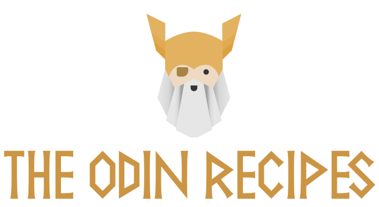
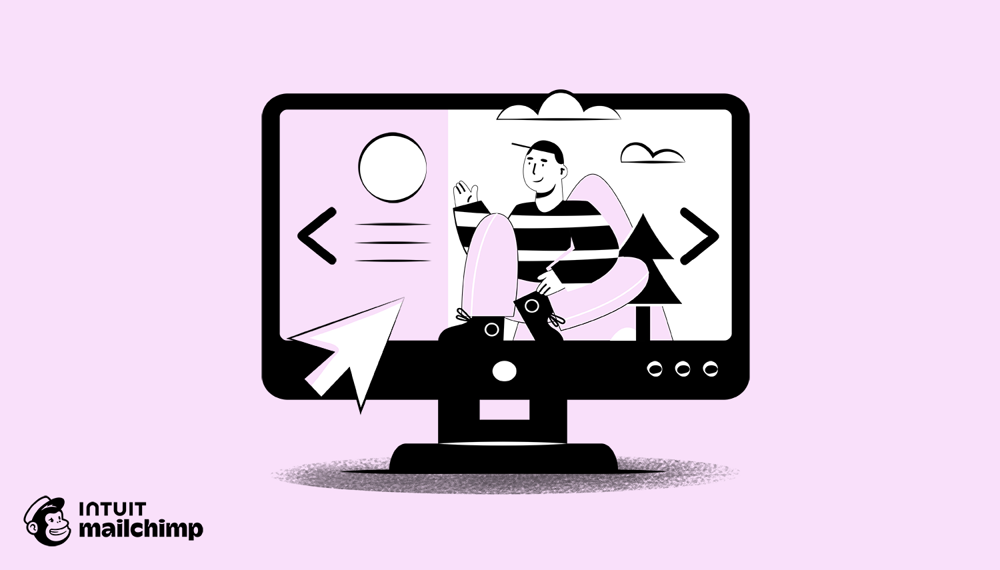

Odin Recipes
A multi-page recipe website developed using HTML and CSS to showcase different recipes in an organized and visually appealing format. Each recipe includes ingredients, step-by-step cooking instructions, images, and relevant recipe information. The project focuses on HTML structure, CSS styling, navigation, image handling, lists, links, and page layout, helping build a strong foundation in frontend web development.
Click to see the project

Landing pages
A static landing page developed using HTML and CSS with a structured navigation bar, hero section, content sections, call-to-action buttons, and footer. The project focuses on webpage structure, CSS styling, typography, colors, spacing, alignment, backgrounds, and visual presentation. It demonstrates the ability to create a clean and attractive webpage while practicing fundamental frontend development concepts.